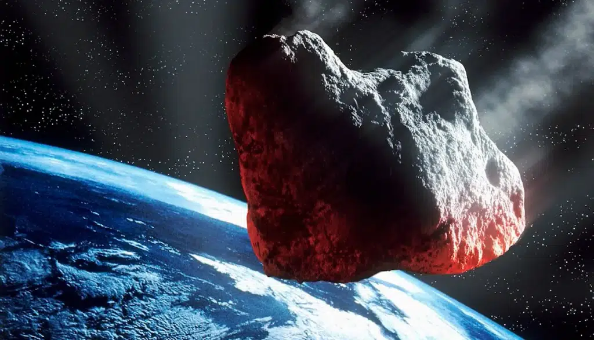
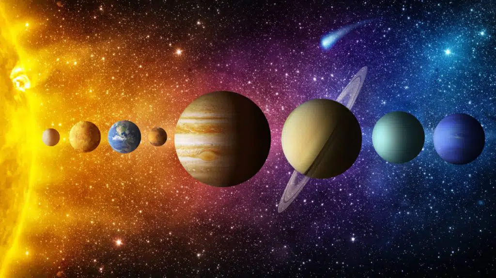
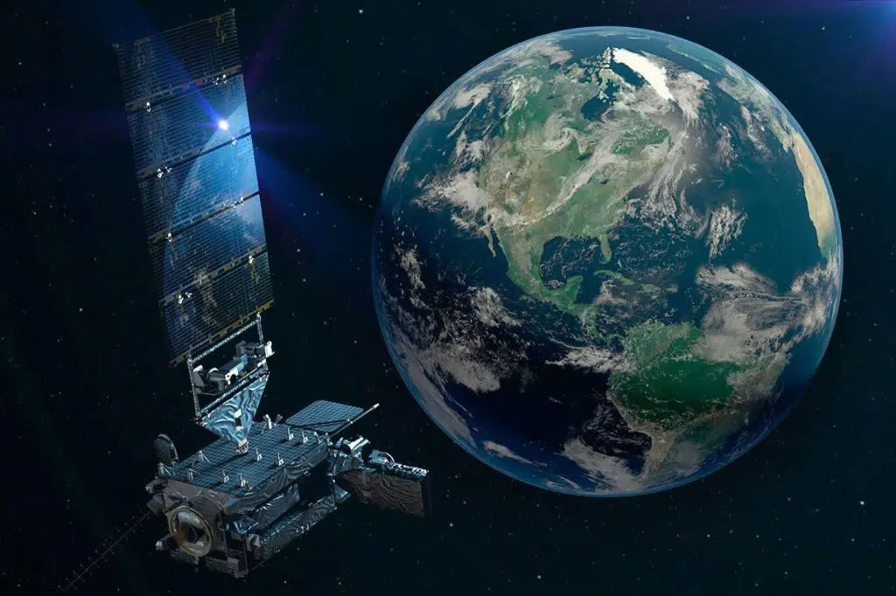
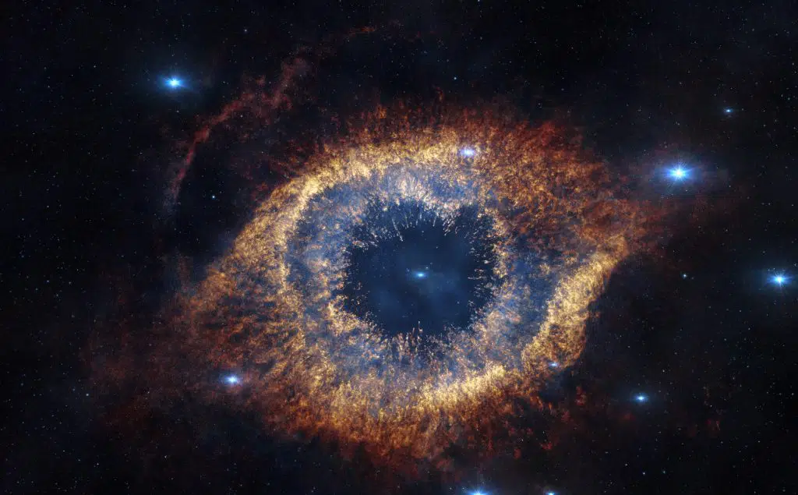

Espaço sideral: O que tem?
Assim como foi informado acima, o espaço sideral é composto por matéria escura, energia escura e corpos celestes. Isso, dentro do espaço que o ser humano conseguiu observar até o momento, como já mencionamos.
Em suma, corpo celeste é todo e qualquer astro no espaço sideral. Existem inúmeros corpos celestes, porém os principais são: asteroides, cometas, estrelas, meteoroides, planetas e satélites.
Asteroides

Planetas

Satélites

Nebulosas
